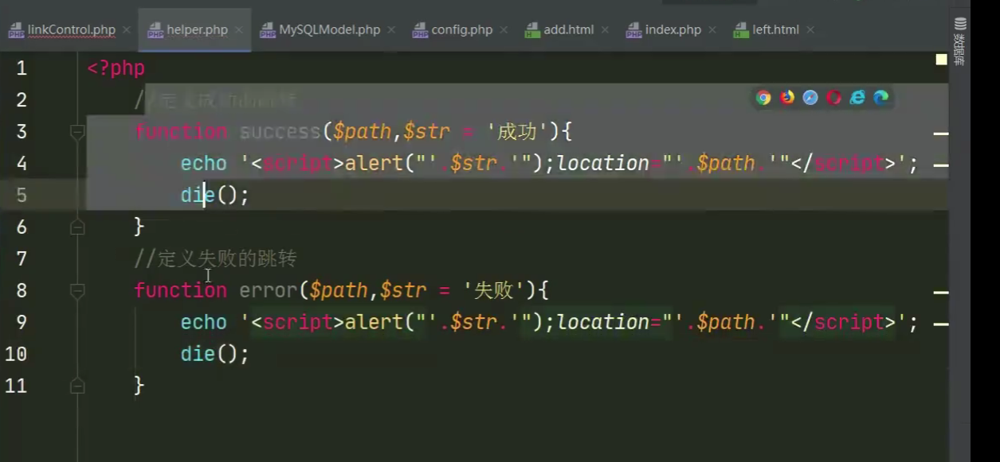
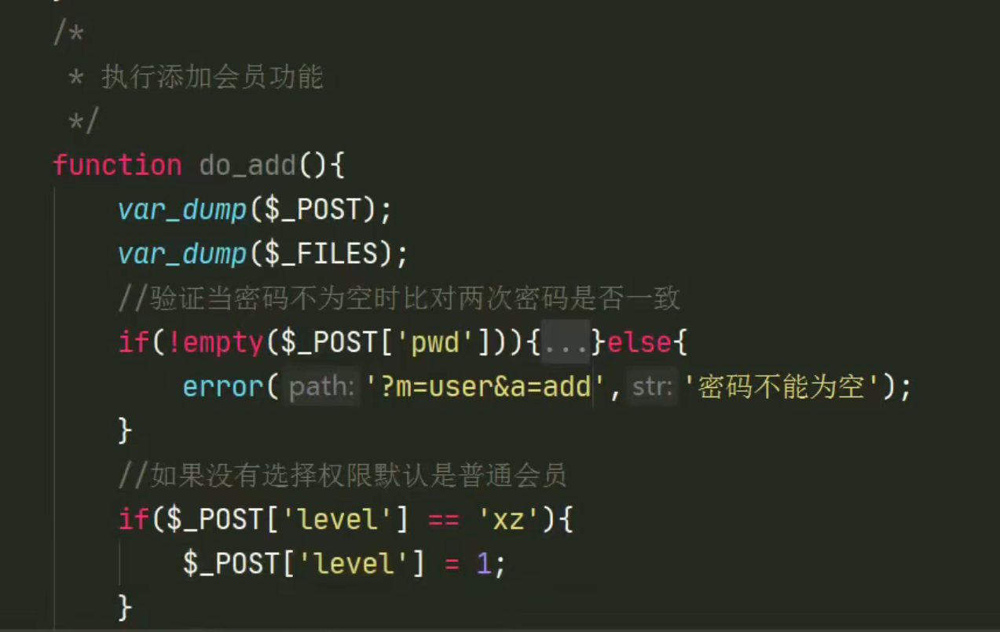
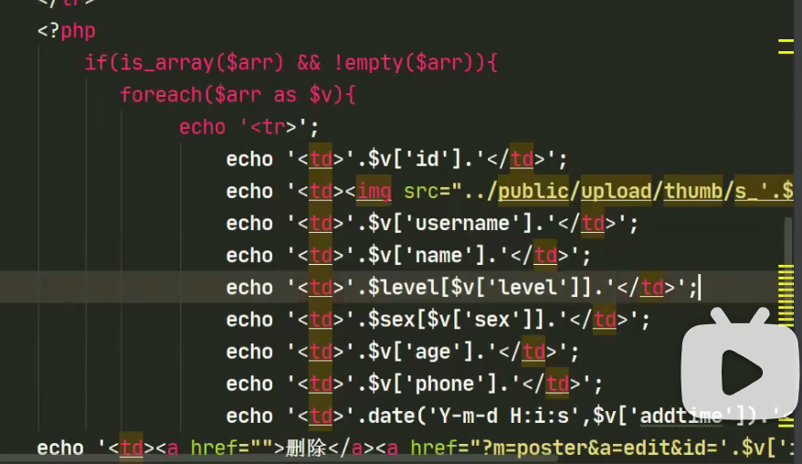
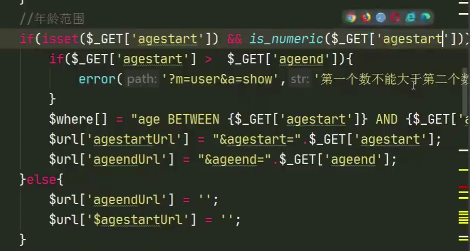
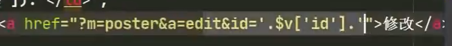
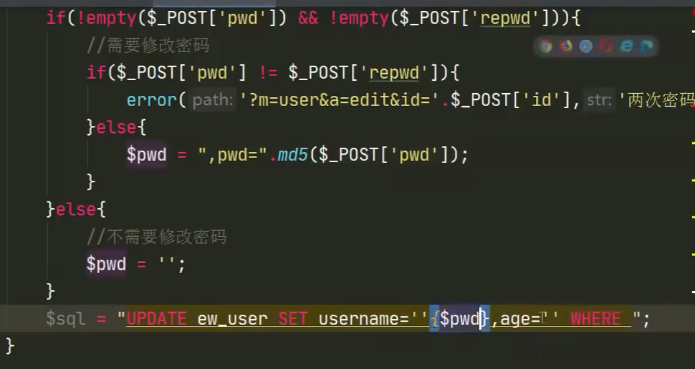
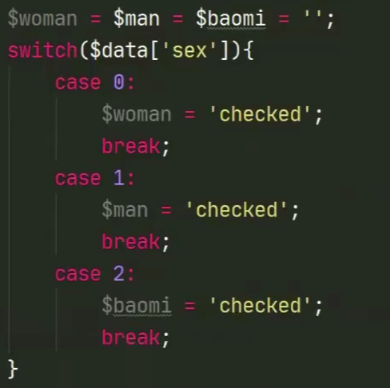

CMS架构和前后台关联-进阶B
cms架构B（PHP+html+mysql的model）
PHP基本语法E
两种在HTNL中写php的写法：
<?=变量名?> <?php pass; ?>
empty(x)函数。x为空或x为0，结果都返回true（注意这里有个坑）
emplode(用什么分割，数组)函数，用来分割数组中的每一个元素。
count()返回数组中元素的个数。用新的数组前，需要定义它
$shuzuming=array()
- `isset(x)`函数，如果x的变量存在，返回true。否则返回false。 一般判断语句为 如果变量x设置了且不为空。 - `is_mumeric()`检测一个变量是否为数字或者数字字符串。 有的时候用empty()函数不理想会考虑能否用此函数。 - `strtotime() `函数将任何英文文本的日期或时间描述解析为 Unix 时间戳 - `time()`获取当前时间戳函数 - `md5()` 把从前台用户输入获得的密码在php中（control.php中）进行md5的加密，再存进数据库中 - `count()`计算数组中单元数目，或者对象中属性个数 - `header()`函数 向客户端发送一个http报头，用来告知客户端信息，也可用于跳转：  - 自己定义的函数 `success(path'?m='，[str])`若成功则跳转的路径 `error((path''，[str])`若失败则跳转的路径 - `ceil(x)`向上取一个最近的整数（大于x的） - 如果要在同级函数中调用另一个同级函数的变量，可以把那个要调用的函数声明为全局函数，或者使用闭合函数的写法。 - **HTML**语法： > - `form`里的`input`标签的属性有： > >  > > - `hidden`属性：一般用来传值而不被用户看到。 > > - `select`标签 > > 单选或多选菜单，里面有`option`标签,其中 > > - `value`属性，这个option如果被选了，那么如果整个select封装成表单提交的话，传出的`$_POST`或者`$_GET`**数组的值就是这个value** > - `checked`加了一个checked属性，可把此复选框/下拉栏设为选中状态。[详情](#checked) > > - `span`行级别，不自动换行。把标签中间的文字给一个特定的样式 > > 等同于HTML5的`font`标签。 > > - `div`块级别，自动换行。把这一块的东西给一个特定的样式 > > - `script`标签里有`alert`弹框弹出，`location`属性表示跳转的位置。 > > - `li`标签（表示单元格）可以在有序列表`ol`里，也可以在无序列表`ul`里 > >  > > - `form`标签（`action`属性表示提交到哪个页面、`method`方法表示是**post提交还是get提交**） > > 表单标签，内涵`input`标签，提交表单的意思 > > - `font`标签，指定大小、文本颜色 > > - `td`标签，表示表格的一行，其中， > > - `class`属性，定义标签的名字 > - `colspan`属性，指明列宽 > - `style`属性，指明是左对齐还是右对齐 > > - **css样式和html相连** > >  > >  - 当用post方法传参进php文件里，此**php文件里写入的是sql语句**（已经有sql模块时）  - **php中变量和字符串怎么链接**  - **一个函数里声明的全局变量不可直接在另一个函数里写这个变量。** 如果非要写，则在另一个函数里这个变量要加上全局变量。 - **闭合函数的调用**（下面有写） - `is_array(变量)`，这个变量是不是数组，返回布尔值 - 在php里进行读取数据库的数据并把数据包到html的表格形式里：**在php中写HTML语法始终被允许**  - php里的`switch语句` 
以友情链接为例的流程
注意control与前台HOME初次关联的流程。（其实跟前面所学的control与后台admin关联的流程一样）
注意闭合函数的调用格式。注意封装的跳转路径(success、error)怎么写。注意所需的所有文件名。
-
每次添加或删除或修改完数据都需要一个跳转–>想到封装：
org文件下（helper.php文件里写）

-
当我们的contrl.php与后台数据库关联时
linkControl.php里调用mysql模块（php链接mysql）。
注意这里的
$selectModel是一个函数下声明的全局变量，要在这个函数里调用，需要再声明一个global。且这里的
$selectModel是一个闭合函数的函数名。这里调用的sql语句的函数返回的东西存储在
$_arr数组中，在包含的html中只要写关于数组$_arr的遍历就可以了linkControl.php里所有的定义的函数：

-
home下，index.php即 前端主入口文件
-
Control模块下，indexControl.php文件：
用于显示首页的html，至于为什么要在php文件里调用显示html，当然是因为要显示的变量是经过php操作的。

-
Admin下，index.php，后台主入口文件

以广告模块为例的流程
注意图片的上载，和在前台以幻灯片播放的形式显示。注意小圆点的个数动态改变的函数。
-
图片上载的数据存进mysql。contrl.php文件下

-
在前台的main.html中循环广告图片
-
前台幻灯片圆点个数根据图片的数量显示
如果需要不管上传了多少张图片，都只取前四张。则在写sql语句的时候加order by 和limit 4 限制就可以了。

以后台会员模块为例的流程
注意下拉框。注意添加会员板块的具体书写。注意显示会员列表的具体书写，其中的遍历很重要，注意分页操作的代码逻辑和php书写，注意搜索的html书写。注意代码块中是自己跟着写一遍对整个流程和代码逻辑和架构和语法更加清晰。html向control.php传值的两种方法。注意搜索操作的逻辑，注意数组中元素的拼接，注意前台html页面怎么通过url传参跳转改变。修改操作的大概逻辑。
-
写url拼接数组和sql语句拼接数组很重要。详解
-
在add.html中，即添加会员的网站前台页面中，加入下拉框选项的添加
-
添加会员功能
注意看考虑的多种情况，先进行多种情况的判断，再执行SQL语句插入进mysql数据库中
此处
thump（）是自己写在org文件下的图片压缩函数。如果传图片一定能拿到一个$_FILE变量存储的是图片信息。而$_POST里一定不会接收图片信息，所以最后要赋值进$_POST的数组里。

-
显示会员列表
-
注意代码逻辑

外层的$level存储的是级别，而内层的$v存储的是用户给的数字，正好可看成下标。
$level=["高级","中级","低级"];--在control.php里面的show函数里面写 $v['level']=[0,1,2]; --用户在input标签里通过select里的option属性传值时，value标签给的是“0,1,2”value属性给的是数字值的示例：

-
下图为show函数（在contrl.php中调用的）中include的前台html，（在显示会员的前台html中,遍历
$_arr数组）
下图为show函数的写法（写＋调用了sql的model的封装函数）

-
-
将显示的内容分页（代码）+调用搜索函数（代码）
写在show.html里：注意tr、td里面套a标签。

注意此分页操作的代码逻辑，在control.php的show函数里面写。
<?php function user(){ function show(){ MySQLModel();//调用的用php写sql语句操作的封装的模块 global $selectModel; $search=search(); //然后进行数组的拼接（见下） var_dump($search); //调用下面的搜索操作 //1.确定分页的显示数 $page=5; //2.获取MySQL里的数据的总条数 $sql="select * from ew_users"; global $totalModel;//也是另一个闭合函数名 $total = $totalModel($sql); //3.得到总页数 $pageAll=ceil($total)/$page //4.获得当前页 $dpage=$_GET['page']??1; //5.处理上一页 $prePage=$dpage-1<1?1:($dpage-1); //6.处理下一页 $nextPage=$dpage+1>$pageAll?$pageAll:($dpage-1); //7.设置limit跳步的数值 $num=($dpage-1)*$page; $limit="LIMIT {$num},{$page}"; $sql="SELECT * FROM ew_user".$limit;//这个函数实现的功能。输如要查询的sql语句 $sex=array('女','男','保密');//为下面include的show.html中写的php代码的数组遍历铺垫 $level=array('<font size="5" color="green">超级管理员</font>','普通管理员')//这里把管理员加了一个显眼的字体样式 global $selectModel;//闭合函数名$selectModel，此函数存储的是有关SELECT的对于数据库的全部操作。原本在MySQLModel()内是全局函数，所以在其他外面调用时，也要声明一个global $arr=$selectModel($sql); include './view/user/show.html'; } } -
搜索操作的函数
-
代码逻辑-数组元素的拼接
以下代码表示把sql的所有条件性质的字符串进行拼接。
以下为拼接“&xxxx”的url

-
搜索操作是如何让前台的html页面只显示搜索出来的东西的
通过改变url（传入html中的input中的value值）

-
搜索操作的大概逻辑
通过多个if语句实现，每一个if语句查找有没有这个条件限制，如果有就给一个这个条件限制的SQL语句一部分和url一部分。最后在show中调用完了之后进行数组（字符串）的拼接。
以年龄查找和时间戳查找为例：


-
删除操作
调用modul中的删除函数的sql模块
删除成功后页面的跳转为show（）这样才能显示删除后的前台页面。

-
修改操作
点修改的超链接应该跳转到的是仅有要修改的那个id的一个专门属于修改操作的页面：

在edit（）函数里写拿出那一条要修改的数据的操作和修改本身的操作和include进修改操作的专门页面edict.html。
在edict.html首先显示未修改前的这条数据的内容（通过在edict.html写value属性的值为$data[]），然后进行在control.php中写各个数据的修改。复选框或下拉栏用checked，图片输入和文本（密码）的输入用另外写的函数，并写入sql语句。

sql语句的发送（用预先写好的sql封装函数）：不用担心修改后的页面怎么显示，mysql中修改了之后，再调用show函数就能显示更新后的结果。

-
checked属性实现下拉栏、复选框的修改：仅设置checked属性不赋值，可以将复选框/下拉栏设置为选中状态。
将checked属性值设置为"checked"或者“true”也可以将复选框/下拉栏设置为选中状态。
例如：html中

control.php中：

-
-
-
两种把HTML中页面获取到的值给php文件的方法，
-
第一个show函数的调用已经通过action传参，传入的是给
user（）和show（）函数。 -
第二个search函数的调用如果继续用此方法，那么只会传入
user（）和search（），不会保留原来show（）函数的传入值，但我们想在同一页面下，既显示show的内容，又显示search的内容，所以不用form的action属性进行传值，而用input标签的hidden属性进行传值。 -
本质是让
$_GET数组的值不是serch的参数覆盖show 的参数，而是serch的参数跟在show参数的后面。

-
html与sql与php相连的语句总结
-
SQL+PHP（在php里写sql语句，此语句后面要经过sql模块）
功能是把Mysql数据库中的数据拿出来进行操作，在封装操作的sql语句时用
"sql语句".$_GET['id'] --利用字符串的拼接，$_GET里为用户输入 --字符串与变量链接： 'sdsds'.$_变量名.'dsd' -
SQL+PHP（在php中写sql语句，在sql语句即双引号的内部）
功能是把用户写的东西(用户在前台输入的东西)以php变量的方式传入（预定义变量）sql语句，从而存入Mysql。调用封装的sql语句时用。
$_sql="...SET webname='{$_POST['webname']}'" -
PHP+HTML（在html的标签里写php变量）
用于把php处理过的变量显示出来（可能存储的是mysql查出来的数据，也可能存储本来前台用户输入的但经过php操作的变量）
<input type="text" name="ord" value="<?=$data['ord']?>">
总结
-
HTML与PHP
HTML:超文本标记语言
PHP：服务器脚本语言
-
CMS抽象架构（PHP环境）
-
CMS具体架构

-
细节补充（针对上面具体架构写不下的地方进行细节补充）、
-
MySQL与前台页面显示关联的具体数据传送细节（modul中封装函数的具体用法）

-
关于url和前台html的显示

-
执行删除或修改（用checked改"选项"的type，用单独函数改文本或"图片"的type）操作后，只要已经对数据库Mysql进行了修改，就不用担心前台显示的数据能不能更新了，再次调用show（）函数一下就更新了。
执行添加add或者显示show操作，怎么把后台的数据返回给前台的：add是通过给post数组赋值，让post数组变得完整（主要是原来的post数组没有图片名），然后传入sql的封装函数中，这个封装函数查询出来的结果会返回一个数组arr[]，再把这个数组arr[]在html中遍历。
-